Darkriders Corner


07/09/2025
I finally decided to upload my webpage again and update the past year with some news. As of 01/01/2025 the works in B.i.T have concluded due to a virus attack and loss corrupted files. I started late in 2024 to design and build Necrotic High Rise. At the moment its on hold. Change in lifes pursuits. I have been continuing with my Etotronic Build and will be working forward until finished.
Latest Projects/Work
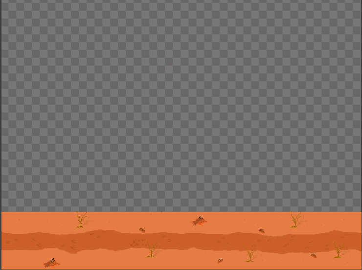 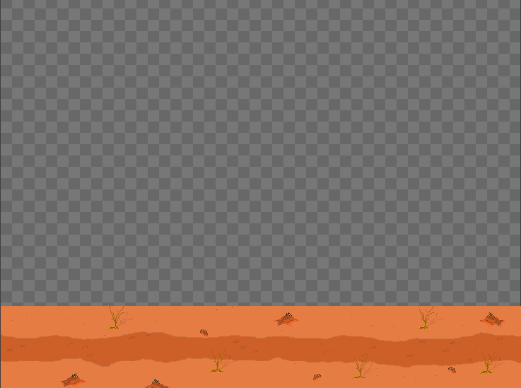 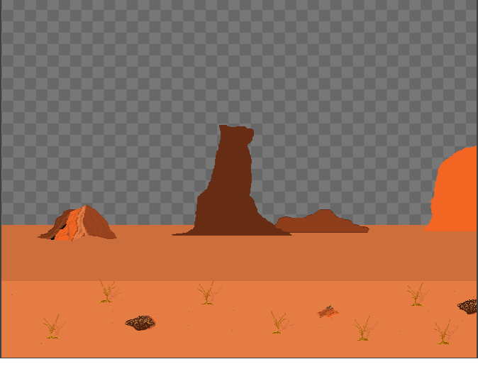 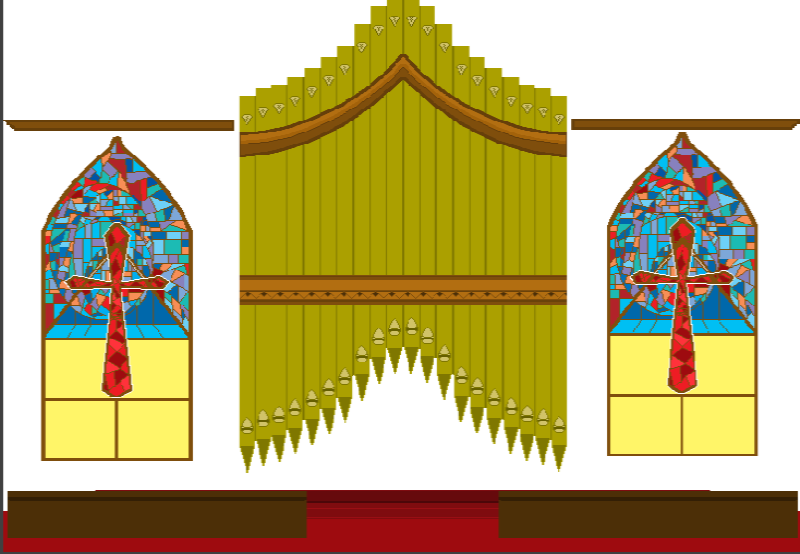 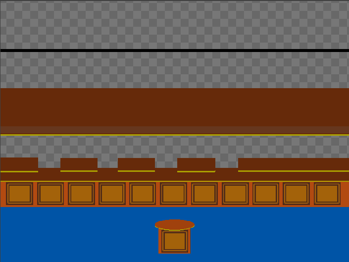 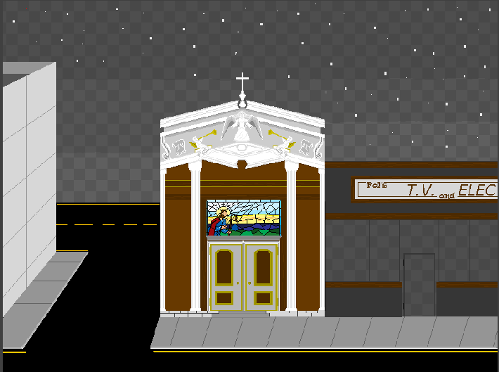 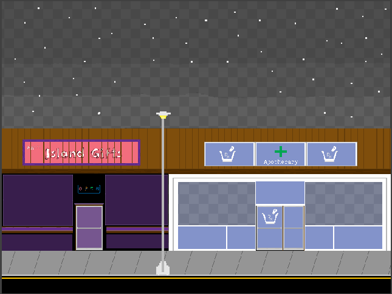 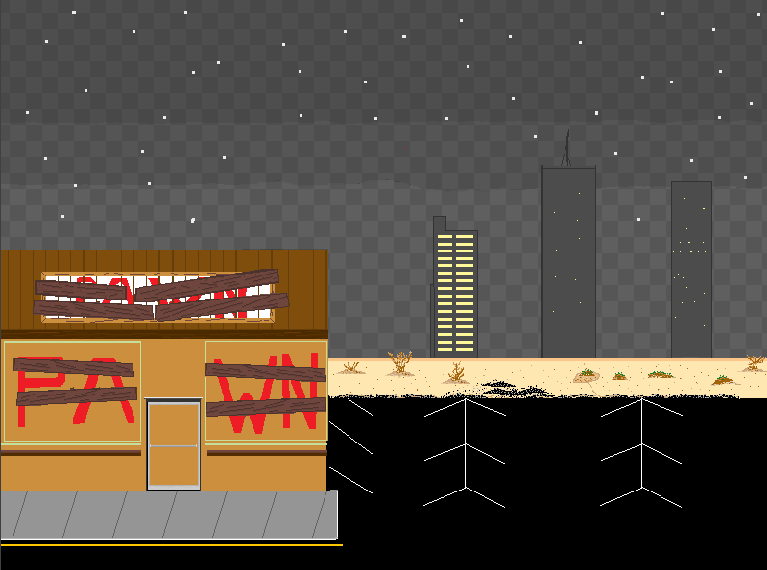
Past Projects
 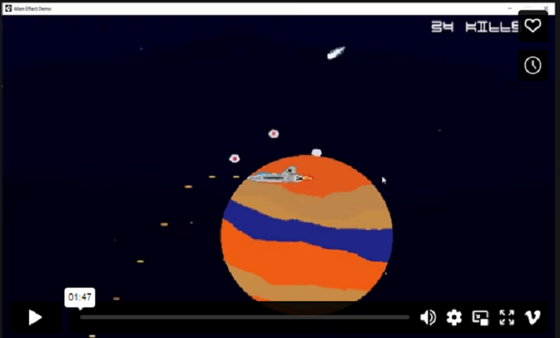
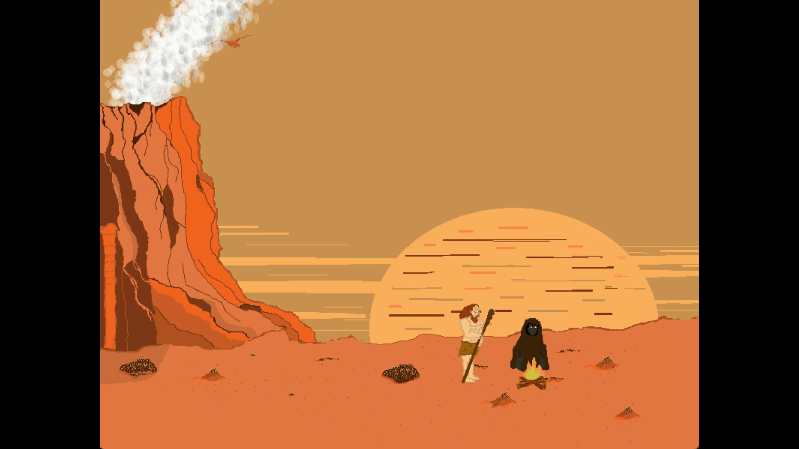
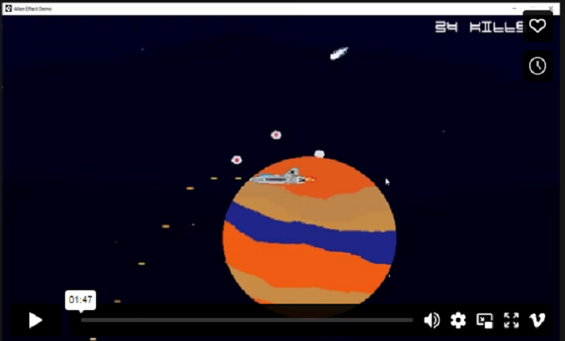
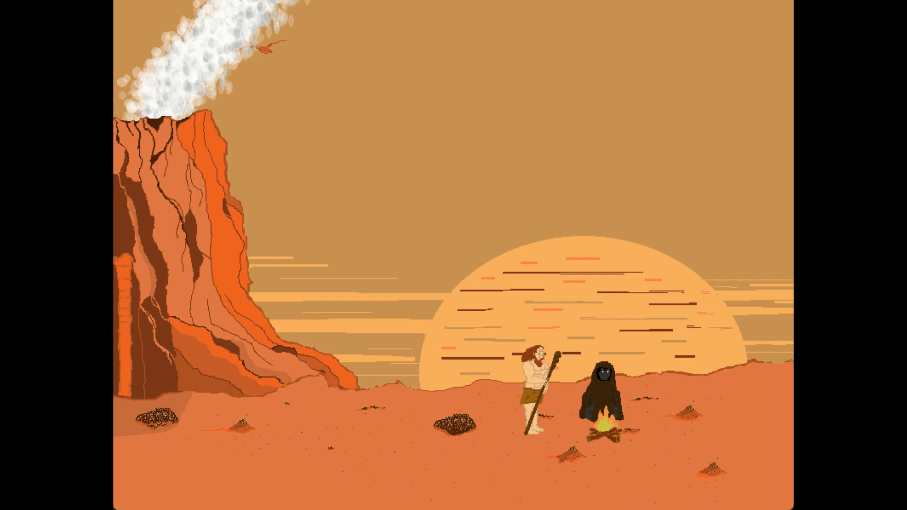
 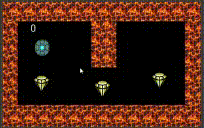
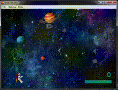
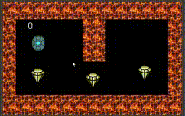
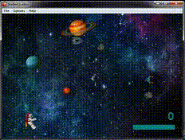
Affiliates
Ever feel like you are just not doing well for the day? Need a pick me up? I often feel the same on off days. But there is some help out there. And to have a trusted place to get quality homeopathic products that are natural and just work to help you in everyday life. Just slide over and check out the products. REAL Mushrooms.com
I use Lions Mane and Reishi to tackle some problems I deal with and I will never look back. If you have allergies to mushrooms this is not the place to check out.
REAL Mushrooms.com